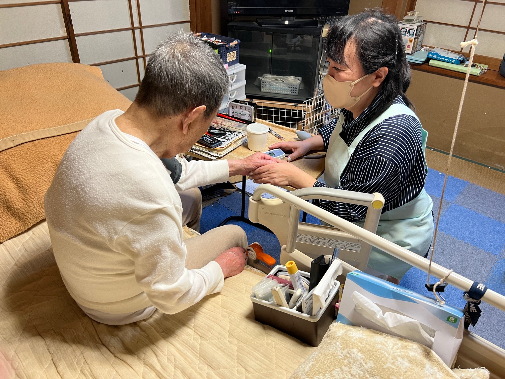
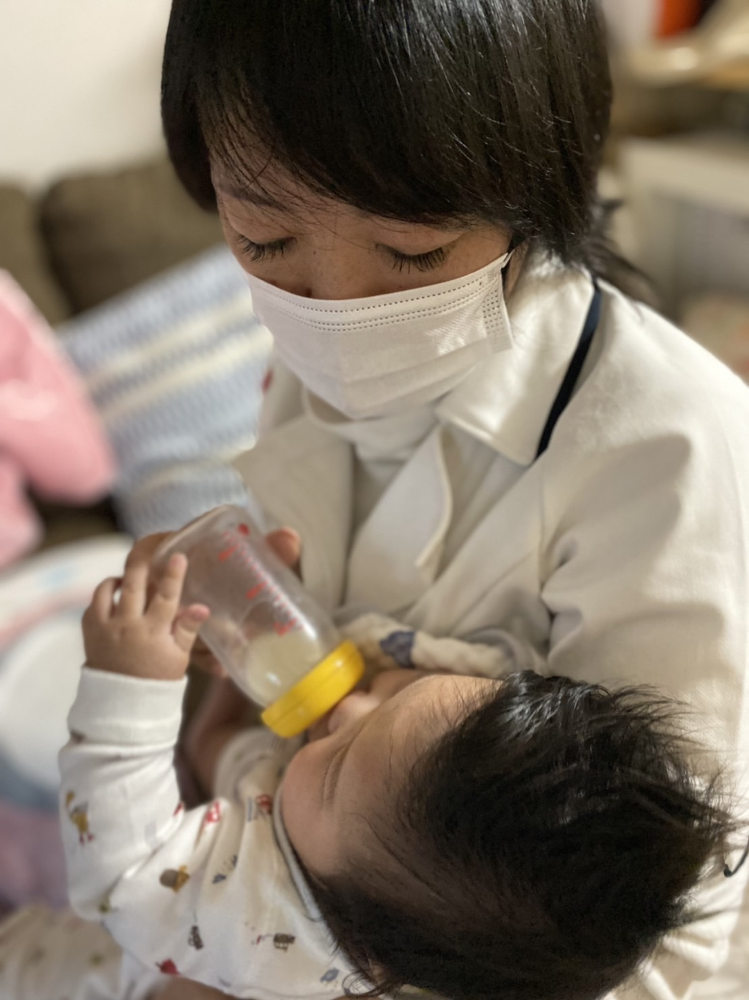
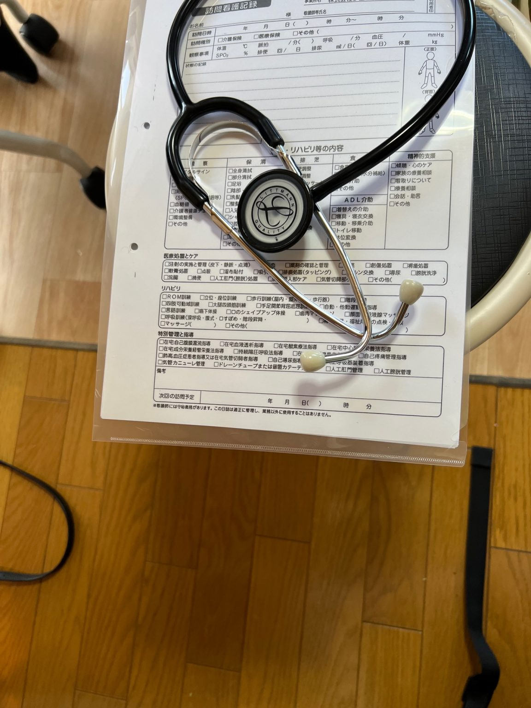
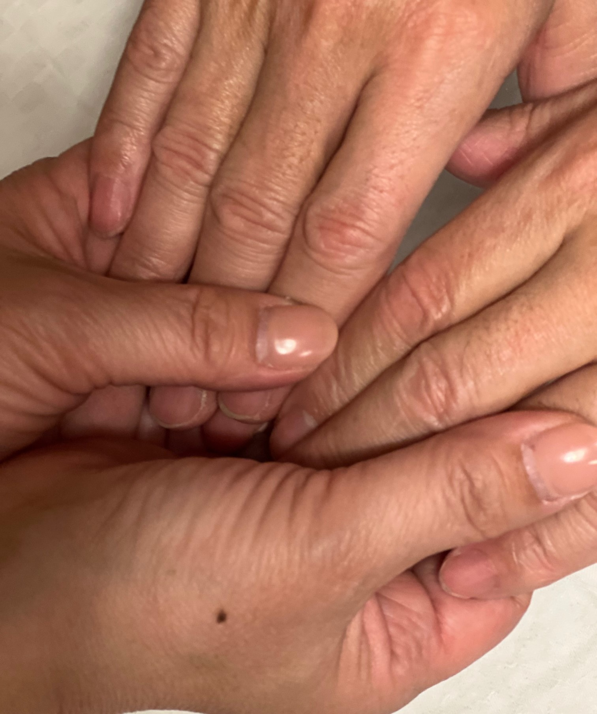

0歳の小児から高齢者まで。経験豊富な看護師が、ご自宅にお伺いします。医療的なケアから療養のご相談、ご家族の不安まで、「あなただけの訪問看護」で寄り添います。

住み慣れた家で、安心を。florence-n は、高齢者の在宅療養に加え、小児・医療的ケア児の訪問看護にも対応しています。要確認：小児対応の範囲・実績

「その人らしさ」を大切に、ご本人とご家族に安心をお届けします。
看護系のお問い合わせは24時間対応。夜間・休日の急な体調変化にも、電話・緊急訪問で迅速にお応えします。
主治医・ケアマネジャー・ご家族と情報を共有し、在宅療養をチームで支えます。退院時のご相談もお任せください。
画一的なケアではなく、その方の生活・ご希望に合わせたオーダーメイドの看護計画をご提案します。
主治医の指示のもと、幅広い在宅ケアに対応します。要確認：実際の提供サービスに合わせて調整

一回ごとの訪問看護記録にもとづき、体調の変化を主治医・ケアマネジャーと共有。医療処置からリハビリ、精神的な支えまで、下記のような幅広いケアをその方に合わせてご提供します。
血圧・体温などの健康チェック、点滴、褥瘡（床ずれ）の処置、カテーテル管理などの医療的ケア。
在宅で医療的ケアが必要なお子さまの看護と、ご家族への相談・サポート。
看護師が行う機能訓練や生活動作のサポートで、住み慣れた環境での自立を支えます。
痛みや症状をやわらげ、ご本人とご家族が穏やかに過ごせるよう、在宅での看取りにも対応。
ご本人の尊厳を大切にした関わりと、ご家族への介護アドバイス・精神的サポート。
介護の不安や困りごと、医療・福祉サービスの活用まで、何でもご相談ください。
お問い合わせから訪問開始まで、丁寧にサポートします。
お電話・フォームでご連絡ください。ケアマネジャー様からのご相談も歓迎です。
ご本人の状態・ご希望を伺い、必要なケアをご提案します。
主治医の訪問看護指示書をもとに、看護計画を作成します。
計画に沿って定期訪問を開始。状態に合わせて柔軟に見直します。
東京・千葉・京都に事業所があります。周辺地域もお気軽にご相談ください。要確認：具体的な対応区・町名
フローレンス柴又
〒125-0052 東京都葛飾区柴又5丁目8番13号 コンフォートフォレスタ新柴又1階
24時間緊急 070-4438-3939／代表 03-5903-8256／FAX 03-5903-8257
フローレンス船橋（千葉）／フローレンス京都 要確認：住所・電話

「その人らしさ」に寄り添う看護を、一緒に届けませんか。経験・ブランクは問いません。まずはお話だけでも歓迎です。要確認：募集職種・条件
採用について問い合わせる| 会社名 | 株式会社フローレンス・N |
|---|---|
| 事業所名 | フローレンス柴又（訪問看護ステーション） |
| 介護保険事業所番号 | 1362090571 |
| ステーションコード | 7391014 |
| 所在地 | 〒125-0052 東京都葛飾区柴又5丁目8番13号 コンフォートフォレスタ新柴又1階 |
| 電話 | 24時間 緊急電話 070-4438-3939 お問い合わせ（代表）03-5903-8256／FAX 03-5903-8257 |
| florence1renraku@gmail.com | |
| 休業日 | なし（24時間365日対応） |
| 事業内容 | 訪問看護 |
| 他事業所 | フローレンス船橋（千葉）／フローレンス京都 要確認：住所・電話 |
ご本人・ご家族はもちろん、医療・介護関係者の方からのご相談も歓迎します。
24時間 緊急電話／お問い合わせ（代表）03-5903-8256・FAX 03-5903-8257／24時間365日対応